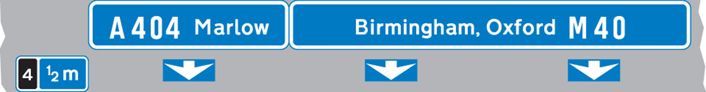
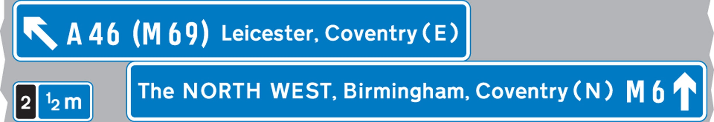

Signs and Signals Direction signs on roads and motorways
Signs on motorways - blue backgrounds

At a junction leading directly into a motorway (junction number may be shown on a black background)

On approaches to junctions (junction number on black background)

Route confirmatory sign after junction

Downward pointing arrows mean ‘Get in lane’ The left-hand lane leads to a different destination from the other lanes.

The panel with the inclined arrow indicates the destinations which can be reached by leaving the motorway at the next junction
Signs on primary routes - green backgrounds
Blue panels indicate that the motorway starts at the junction ahead. Motorways shown in brackets can also be reached along the route indicated. White panels indicate local or non-primary routes leading from the junction ahead. Brown panels show the route to tourist attractions. The name of the junction may be shown at the top of the sign. The aircraft symbol indicates the route to an airport. A symbol may be included to warn of a hazard or restriction along that route.
Blue panels indicate that the motorway starts at the junction ahead. Motorways shown in brackets can also be reached along the route indicated. White panels indicate local or non-primary routes leading from the junction ahead. Brown panels show the route to tourist attractions. The name of the junction may be shown at the top of the sign. The aircraft symbol indicates the route to an airport. A symbol may be included to warn of a hazard or restriction along that route.

On approaches to junctions

At the junction

Route confirmatory sign after junction

On approaches to junctions

On approach to a junction in Wales (bilingual)

Primary route forming part of a ring road

Primary route forming part of a ring road
Signs on non-primary and local routes - black borders
Green panels indicate that the primary route starts at the junction ahead. Route numbers on a blue background show the direction to a motorway. Route numbers on a green background show the direction to a primary route.
Green panels indicate that the primary route starts at the junction ahead. Route numbers on a blue background show the direction to a motorway. Route numbers on a green background show the direction to a primary route.

On approaches to junctions

On approaches to junctions

At the junction

Direction to toilets with access for the disabled

Picnic site

Ancient monument in the care of English Heritage

Direction to a car park

Tourist attraction

Direction to camping and caravan site

direction-sign-other-advisory-route-lorries

Route for pedal cycles forming part of a network

Recommended route for pedal cycles to place shown

Route for pedestrians

Symbols showing emergency diversion route for motorway and other main road traffic

Symbols showing emergency diversion route for motorway and other main road traffic

Symbols showing emergency diversion route for motorway and other main road traffic

Symbols showing emergency diversion route for motorway and other main road traffic

Diversion route